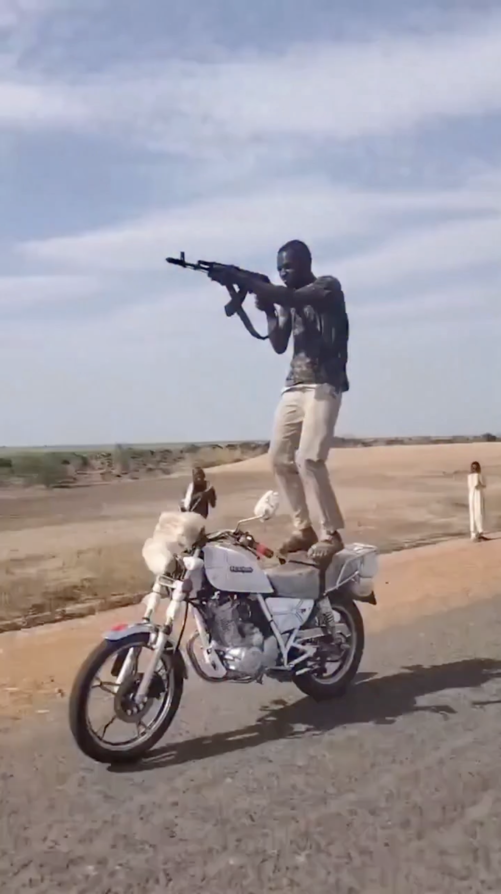
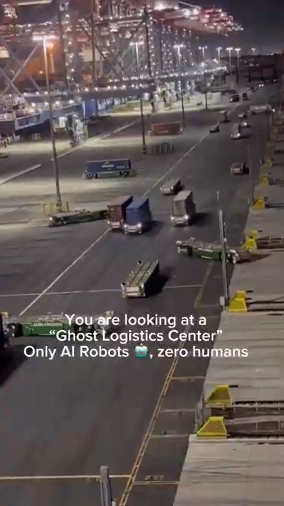
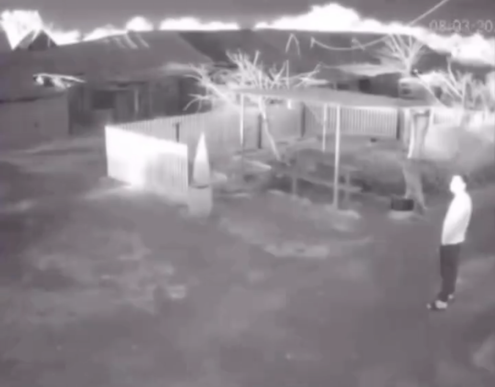
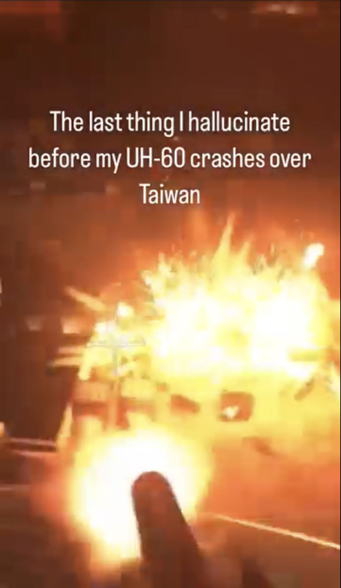
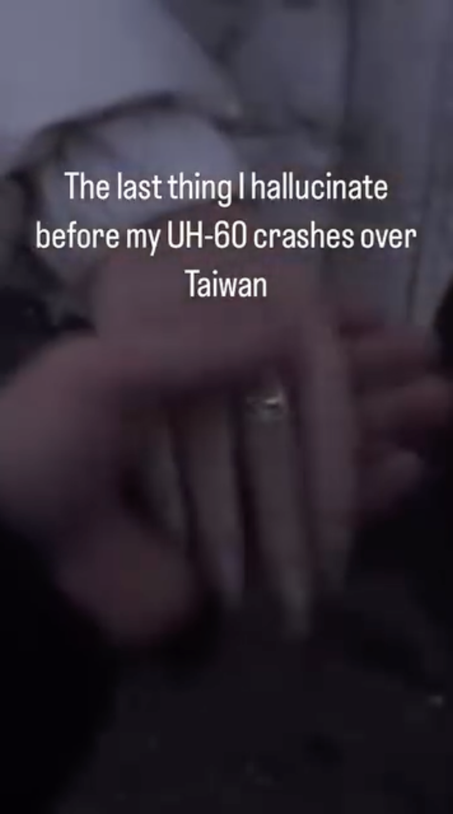

Lo scrolling è diventato un gesto strutturale della nostra quotidianità. Un atto perfettamente integrato nei codici della sopravvivenza contemporanea, anche per la sua funzione anestetizzante e dissociante. All’interno di questo flusso apparentemente innocuo, scrollare si trasforma facilmente in un accumulo continuo di informazioni, immagini e notizie che si formano, si sovrappongo e si consumano senza mai davvero sedentare.
In una società che ci impone di restare funzionali, leggeri e performativi, immagini di guerra, genocidi e catastrofi compaiono sugli stessi schermi che utilizziamo per guardare vlog patinati o seguire l'ennesima narrazione spettacolarizzata della quotidianità occidentale. Il doomscrolling diventa così il principale mezzo di informazione per la Generazione Z: una esposizione continua e non mediata che produce consapevolezza immediata, ma allo stesso tempo destabilizzazione, shock, pessimismo e un senso diffuso di impotenza e depressione.
L’architettura dei social media trasforma ogni evento in un’icona transitoria, un’immagine-simbolo destinata a durare pochi secondi prima di essere sostituita. Anche Gaza, che sembrava poter rappresentare la tragedia definitiva capace di interrompere il nostro gesto meccanico, è stata rapidamente assorbita e disumanizzata dal dispositivo che l’ha resa visibile.
Il flusso di notizie non si interrompe, ma persiste in modo patologico, fuggente, impotente. La verità è che non possiamo fare altro che questo:
Non è la realtà, ma una sua versione sterilizzata: una post-verità. È uno sguardo che non respira, non trema, non percepisce l’odore del ferro e del sangue, il peso del corpo, la prossimità della morte.
In questo processo il corpo della vittima si riduce a un’immagine sospesa pochi frame prima dell’impatto, mentre quello del carnefice diventa un operatore distante.
Il progetto documenta lo stato di una generazione completamente bruciata dal proprio rapporto con i social media, ma allo stesso tempo lucidamente consapevole della violenza strutturale del mondo che la circonda. Non è una provocazione né una celebrazione del male, ma una constatazione amara. La violenza è già distribuita nei dispositivi che usiamo, nei linguaggi che adottiamo, nelle interfacce che mediano il mondo per noi.
Forse non siamo pronti alla prossima guerra mondiale, ma siamo già preparati a guardarla.
Questo video segna una frattura netta tra due regimi dell’immagine: la comunicazione televisiva e quella dei social media. Da un lato il telegiornale, mezzo informativo per eccellenza, mediato, orizzontale, istituzionale; dall’altro una comunicazione immediata, verticale, che appartiene a un linguaggio generazionale e informale.
Tra questi due orizzonti si colloca l’immagine di un uomo ucraino, all’esterno della propria abitazione, intento a fumare una sigaretta. La scena quotidiana, notturna, viene interrotta dal suono di un drone che attraversa lo spazio e colpisce un edificio fuori campo. La telecamera di sicurezza registra l’evento senza enfasi. Un flash improvviso squarcia l’immagine, ma non modifica in alcun modo la scena.
L’impassibilità dell’uomo non è indifferenza, ma adattamento. È una forma di elaborazione del trauma che nasce dalla prossimità costante alla violenza. Il pericolo è reale, ma viene assorbito per necessità di sopravvivenza. In questa sospensione tra allarme e normalità si riflette la nostra stessa posizione di spettatori: presenti, informati, ma emotivamente schermati.
L’immagine si inserisce come una soglia tra ciò che abbiamo visto prima e ciò che vedremo dopo, segnando il passaggio definitivo alla forma dominante dei contenuti contemporanei. La guerra non viene più raccontata, ma condivisa.
Sui social media, molti utenti rielaborano eventi traumatici attraverso una forma visiva accattivante, quotidiana ed apparentemente leggera. Qua abbiamo diversi esempi: dai vlog girati a Gaza, ai TikTok sull’uragano Helene, fino ai meme ironici su un’imminente fine del mondo. Non si tratta di banalizzazione, ma di un tentativo di restare funzionali, di continuare a esistere in un mondo che non concede pause.
 Negli ultimi anni, piattaforme come TikTok e Instagram hanno visto proliferare un formato video breve che coniuga l'estetica della catastrofe con la nostalgia individuale. La struttura narrativa è dicotomica: l’incipit mostra violenza bellica o eventi traumatici (spesso in POV o FPV), seguiti bruscamente da immagini domestiche o d’infanzia. Questo contrasto simula un’allucinazione pre morte, trasformando l’evento tragico in memoria estetizzata.
In questo contesto, la morte o la fine della civiltà fungono da “filtro nostalgico”, conferendo valore assoluto a frammenti quotidiani che diventano l’ultimo baluardo dell’umano. La struttura dei social media favorisce una “democratizzazione del trauma”. Nei meme FPV, la visuale in prima persona non documenta la realtà, ma immerge lo spettatore in una simulazione. La violenza viene metabolizzata attraverso codici visivi familiari, come quelli dei videogiochi, permettendo al meme il salto verso il sentimentale e l’accesso a una memoria intima. Ciò che chiamavamo “realtà” è sostituito da una sua versione processata: nitida ma cieca. Nei video FPV, non vediamo attraverso gli occhi di un soldato, ma dell’oggetto che li trasporta. La “PlayStation mentality” trasforma i conflitti in giochi, e la gamification della violenza è solo la punta dell’iceberg di una gamification dell’esistenza intera.